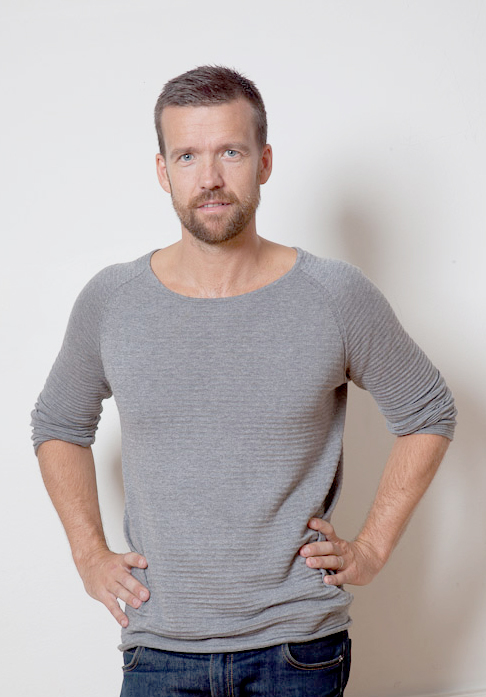
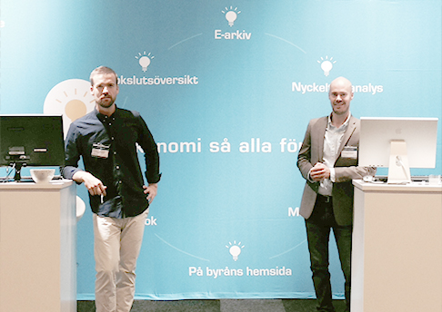
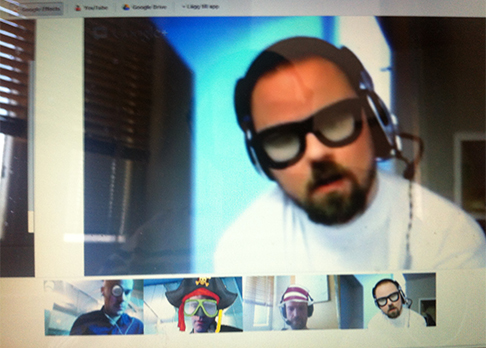
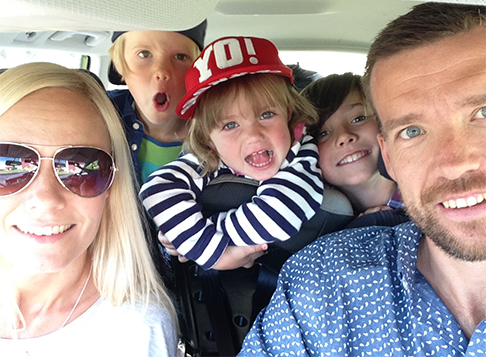

Interview Företagsplatsen #1: Johan Degerfeldt
Interview with Johan Degerfeldt
Two months ago I moved to Stockholm, working full-time at Företagsplatsen as a software engineer. Företagsplatsen (or FTGP for short as we call it) is a really fun IT company to work at, I really enjoy the people and the culture. Just like I did with my previous job at Inria, I decided to do another series of interviews of my colleagues at FTGP.
As the CEO of the company, it only made sense to interview Johan first. I guess Johan looks like what we imagine of a viking: tall, light hair and a beard, but he is definitely more talkative than the average Swedish guy. He's half of the time joking around and the other half really serious talking business and stuff, making him a really cool guy to work with.

Figure 1: Johan Degerfeldt
Hi Johan, thanks for taking this interview. Can you start by telling me a bit about yourself?
My name is Johan Degerfeldt, I am 38, married (Ida) and have 3 kids. 9(Albin), 7(Elmer) and 3 (Nora) years old.
I live in the northern part of Sweden, in Skellefteå where I was born and raised on the countryside. Both of my grandfathers and my dad have been entrepreneurs and running their own businesses so when I graduated from the university with a masters degree in International Business Administration and a bachelors degree in Informatics an upportunity opened to start up a business in Stockholm with three friends, I took that chance. For 3-4 years we did consultancy work to finance the developement of a product that we now offer the swedish, norwegian and danish tax and accounting agency market. The application helps them to report their finished work so that their clients can appriciate and understand business reports. After living in Stockholm for 5-6 years we moved back north for family reasons as all my kids grandparents live here. Therefore I work 1 week a month from Stockholm and the rest in Skellefteå. Now we are 7-8 employees and growing which is a lot of fun.
My priorities in life is first to be the best father and husband I can be, second, to stay healthy and work out every lunch and third, to do my best at work.
My responsibilities at work is to keep the team happy, take care of sales and customer support. Now that we are releasing a brand new version a lot of my time will also be spent on testing. The most fun part of my job is strategic selling and of course to design new features.
In my spear time I am a soccer coach for both my sons teams.
Lets end with a few fact about me:
- I see myself as being a top 5% father.
- I am taller than the medium sized Swede.
- I dream about being a fighter pilot, computer geek or a designer. I am neither!
- My PR on rowing 500 m is 1:31.
- On my tombstone it will say, "Johan Degerfeldt, a nice guy, above average at most things, great at nothing!"

Figure 2: Johan the business man
What do you do to keep the team happy?
Being positive, making coffee and asking questions so that others feel smarter than they really are. And I try to make the team communicate and to focus on ones own contribution to the team.
Can you quickly describe the company and what it does?
Bookkeeping, the art of registration of all business activities into a software for legal and taxation purposes does almost never serve any benefit for small size companies. However larger companies use expert personnel to understand and learn from the history of a company. Företagsplatsen aims to present such bookkeeping data in a way that also small and medium sized companies can understand their company’s financial situation and development.
Sweden, the land of regulations and standards, have off course given us a kick start on this solution as the entire bookkeeping industry have agreed on a standard export-import format for moving bookkeeping data between the input software and to annual report and taxation software. What we do in Sweden is therefore just do base the entire input on that file standard.

Figure 3: A board meeting
What does a typical day at work look like?
Arrive at 7:52 after leaving my daughter at kinder care.
- Drinking 4,2 cups of coffee.
- Answering 3,2 support mails from clients.
- Engaging in 2,3 sales calls.
- Participate in 0,9 internal meeting on hangout with the developers
- Creating 0,8 new themes and test accounts for potential customers
- Having contact with 0,5 partners/resellers on phone or email
- Doing crossfit on my lunch break for 32 minutes with 1,2 training partners
- Reading 2.1 funny emails that I get sent by someone
- Creating 0,3 new quotations
- Receiving 0,9 incoming sales calls.
- Doing 0,6 administrative tasks for the company
- Participate in feature discussions for 22 minutes
- Testing new code/features for 16 minutes
- Having 1,3 typical Swedish workplace “fikas” in my shared office space fika room for 13 minutes each
- Engaging in 42 minutes of discussions with Anders or Henrik about business decisions.
Leave my workplace at 16:50
What are the last 3 books that you have read?
- How to become the best sports parent in the world (Read because of my 7 and 9 year old)
- Nock Nock (Read to my 3 year old)
- Deathly Hollows (Read to my 9 year old)

Figure 4: Johan the family man
If you were doing an interview of one of your colleagues, what question would you ask him?
Ben: I would like you to compare Sweden and France on the following 5 questions (better or worse):
- Sweden is …… than France at Ice hockey.
- Swedish hamburgers are ……. tasting than french ones.
- Swedish salaries are ……. than French ones.
- Swedish co-workers are ……. than French ones.
- Swedish girls are ……. looking than French ones.
Thank you Johan!
comments powered by Disqus